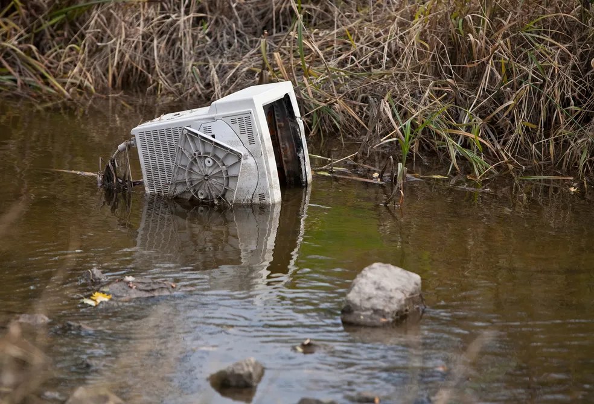

Aprenda a cuidar do meio ambiente com atitudes simples.
Ver pontos de coletaO avanço acelerado da tecnologia transformou profundamente a sociedade contemporânea, tornando dispositivos eletrônicos indispensáveis no cotidiano. Pilhas e baterias, presentes em celulares, notebooks, brinquedos, controles remotos, relógios, lanternas e inúmeros outros equipamentos, desempenham papel fundamental no funcionamento desses aparelhos. Entretanto, apesar de sua utilidade, esses componentes representam um dos resíduos mais perigosos quando descartados de forma inadequada.
Pilhas e baterias contêm metais pesados altamente tóxicos, como mercúrio, chumbo, cádmio, níquel e zinco, substâncias capazes de causar contaminação do solo, da água e de organismos vivos. Estudos mostram que uma única pilha pode contaminar até 20 mil litros de água, e seu tempo de decomposição pode ultrapassar 500 anos, dependendo do tipo e da composição química. Quando descartadas no lixo comum, essas substâncias podem vazar e atingir lençóis freáticos, rios e áreas de preservação, gerando impactos ambientais cumulativos e de difícil reversão.
No Brasil, o problema é agravado pelo alto consumo de eletrônicos e pela falta de informação da população. Segundo dados de pesquisas ambientais, o país produz milhares de toneladas de lixo eletrônico por ano, e grande parte desse volume é descartado incorretamente. Para enfrentar esse desafio, a Política Nacional de Resíduos Sólidos (Lei nº 12.305/2010) estabeleceu a responsabilidade compartilhada pelo ciclo de vida dos produtos, incluindo a obrigatoriedade da logística reversa para pilhas e baterias.

Diante desse cenário, torna-se fundamental conscientizar a população sobre a importância do descarte correto desses materiais. Pequenas atitudes, como separar corretamente as pilhas usadas e encaminhá-las para pontos de coleta adequados, podem gerar um impacto significativo na preservação do meio ambiente.
O projeto GreenCharge foi desenvolvido com o objetivo de informar, orientar e facilitar o acesso da população a práticas sustentáveis relacionadas ao descarte de pilhas e baterias. Através deste site, é possível compreender os impactos do descarte inadequado, aprender como realizar o descarte correto e localizar pontos de coleta na região de Jundiaí.
Dessa forma, o GreenCharge busca contribuir para a construção de uma sociedade mais consciente, responsável e comprometida com o futuro do planeta.